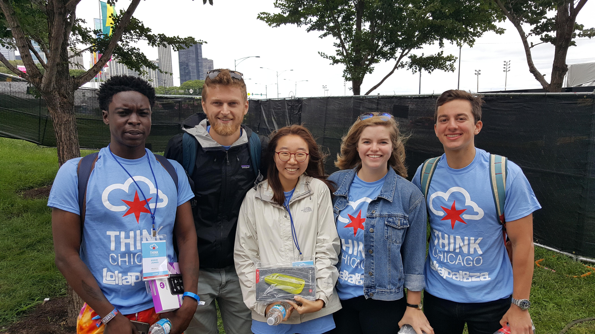

Think Chicago
Civic Tech Challenge

This past week I participated in the 2017 ThinkChicago program and civic tech challenge. The entire program sought to teach students all across the country the opportunities Chicago has to offer to entrepreneurs and students interested in working with technology.
We were all paired into groups to solve a civic tech challenge that Mayor Emanuel could implement to make life better for Chicago residents. I'm proud of my team's effort and constant motivation throughout the event; we made it into the finalists round and then secured first place for the best solution in the contest.
Team 18 - Bears:
Eddie Jones - City Colleges of Chicago-Olive-Harvey College
Daun Lee - Washington University, St. Louis
Lisa Shmidt - University of Illinois Urbana-Champaign
Andrew Sonta - Stanford University
Emily Blackman - Northwestern University
Jorge Nazario - University of Notre Dame